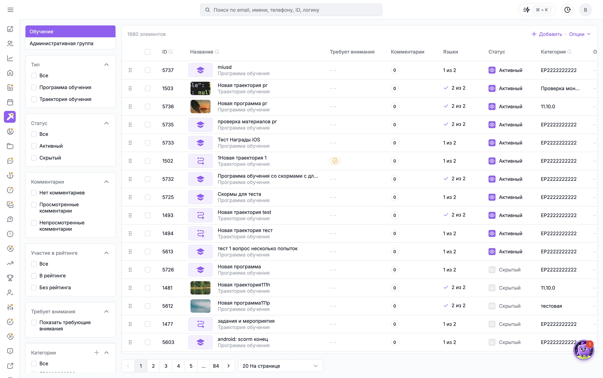
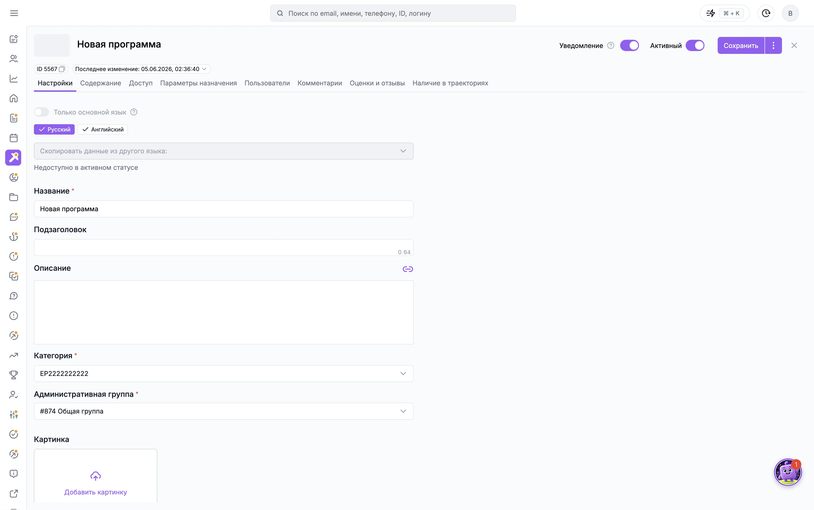
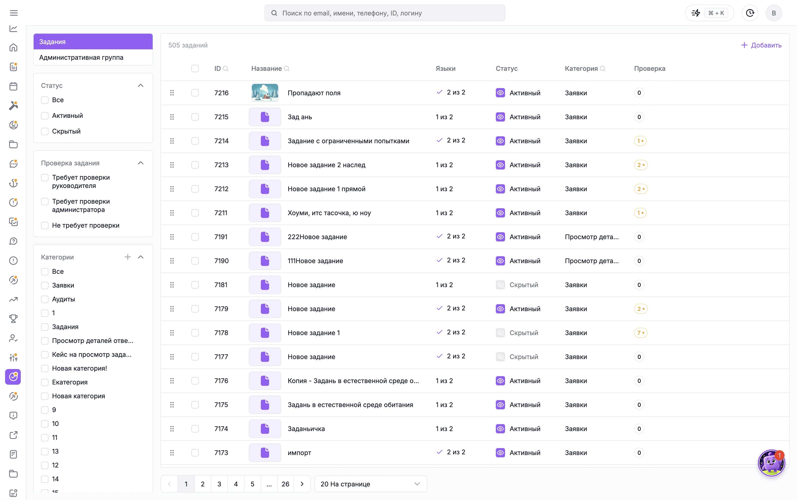

Собрал прототип обновления и показал его администраторам, чтобы обсудить направление развития интерфейса.
ЭквиоB2BEdTechUX-исследованиеИИ-прототип
Почему я захотел обновить админ-панель
В 2024 году мы обновили веб-платформу Эквио, а админ-панель осталась в прежнем оформлении. Визуально они стали похожи на два разных продукта, хотя были частями одной системы.
При ограниченных ресурсах мне хотелось проверить, как знакомые элементы админки будут выглядеть в новом визуальном языке: с обновлёнными цветами, скруглениями и другими приёмами веб-платформы. Повторяющаяся структура интерфейса давала возможность попробовать перенести этот подход с помощью ИИ.
Прежде чем задумываться о полноценном обновлении, я хотел собрать обратную связь и понять, насколько такие изменения нужны и актуальны.
Текущая админ-панель · Обучение1 / 3

Обучение

Настройки программы

Задания
Что я хотел проверить
Потребность. Насколько нужно визуальное обновление админ-панели.
Направление. Как админ-панель могла бы выглядеть в визуальном языке обновлённой веб-платформы.
Новые сценарии. Какие изменения могут улучшить работу администраторов и как на них отреагируют участники проверки.
Первый этап: редизайн
Чтобы проверить обновление при ограниченных ресурсах, я с помощью Codex создал локальную копию админ-панели с тестового стенда. На её основе переработал CSS и элементы интерфейса, сохранив привычную структуру.
Визуальный язык. Обновил меню, цвета, типографику и скругления, чтобы связать админ-панель с веб-платформой.
Страница материала. Переработал страницу материала и сгруппировал настройки в смысловые блоки.
Небольшие UX-улучшения. Добавил закрепление элементов таблицы и шапки страницы материала при прокрутке.
Новая фильтрация: отдельный прототип
По опыту я понимал, что привычные сценарии администраторов нельзя радикально менять без проверки. Поэтому новый способ работы с фильтрами я вынес в отдельный прототип, чтобы посмотреть на реакцию участников.
Обновлённый сценарий. Я предложил новый способ выбирать условия в интерфейсе, который долгое время оставался привычным пользователям.
Гипотеза. Администраторам может быть полезно сохранять наборы условий и возвращаться к ним при повторной работе.
Как я собрал обратную связь
Гайд-туры. С помощью Codex я подготовил интерактивные туры по обоим прототипам, чтобы познакомить участников с изменениями.
Опрос. Я составил вопросы в Яндекс Формах, согласовал их с руководителем продукта, и мы запустили опрос среди сотрудников техподдержки.
Обработка. С помощью ИИ я сгруппировал комментарии по темам и сверил выводы с исходными ответами.
Что показал опрос
Новое оформление
Оценка
Доля ответов
Оценка 7
8,3%
Оценка 8
25%
Оценка 9
58,3%
Оценка 10
8,3%
Тема и контекст
Доля ответивших
ПоложительноВизуально более современный продуктОформление описали как более свежее и чистое, усиливающее впечатление от продукта.
38,5%
ПоложительноГруппировку настроек оценили положительноПоложительно отметили смысловое разделение настроек на блоки.
23,1%
Потенциальная больМеньше настроек на экране, больше прокруткиОтметили большие отступы и разреженность настроек: на экране помещается меньше параметров и приходится больше прокручивать.
38,5%
Потенциальная больСложно различать области настроекНастройки визуально сливаются: блокам не хватает акцентов или расстояния между секциями.
23,1%
Потенциальная больВыход из редактора может быть неочевиднымСтрелка назад вызвала разные реакции: отметили риск случайного выхода, путаницы с отменой действия и необходимость сохранить изменения перед выходом.
15,4%
Удобство фильтрации
Оценка
Доля ответов
Оценка 4
8,3%
Оценка 5
8,3%
Оценка 6
16,7%
Оценка 7
8,3%
Оценка 8
25%
Оценка 10
33,3%
Тема и контекст
Доля ответивших
ПоложительноУдобство нового вариантаО новой фильтрации отозвались положительно; также отметили, что оценка может зависеть от опыта работы в админке.
25%
Потенциальная больНовый способ фильтрации требует дополнительных действийЧасть участников отметила дополнительные клики и переходы между окнами: прежде одно условие можно было выбрать одним нажатием.
25%
Потенциальная больТрудно быстро проверить активные условияНе хватило цветовых акцентов; для проверки выбранных условий приходится открывать плашки.
25%
Потенциальная больСложнее понять, какие фильтры доступныПредпочли привычную панель, где доступные условия видны сразу.
16,7%
Сохранение наборов фильтров
Оценка
Доля ответов
Оценка 3
16,7%
Оценка 4
8,3%
Оценка 6
8,3%
Оценка 10
66,7%
Тема и контекст
Доля ответивших
ПоложительноМожно быстрее вернуться к повторяющейся фильтрацииУчастники увидели пользу сохранения сложных наборов условий для повторной работы.
41,7%
Потенциальная больМожно забыть об активном наборе или его составеУчастники описали риск не заметить включённый фильтр или не вспомнить сохранённые условия.
16,7%
ПредложениеСохранение можно добавить к привычному сценариюПредложили сохранять наборы прямо в существующем варианте фильтрации.
8,3%
ПредложениеНаборы могут пригодиться и в статистикеПредложили использовать сохранение фильтров также в разделе статистики.
8,3%
К чему я пришёл
Я быстро собрал интерактивные прототипы и получил обратную связь, с которой можно продолжать работу.
Визуальное направление поддержали. Все, кто оценил оформление, поставили от 7 до 10 баллов. Замечания к плотности, разделению блоков и читаемости помогут подготовить следующую итерацию.
Выявил потенциальные боли. Обратная связь показала, какие привычные действия важно сохранить и какие вопросы вызвали новая фильтрация и наборы условий.
Определил следующий шаг. Подготовить обновлённый прототип и обсудить его с администраторами на реальных рабочих сценариях.